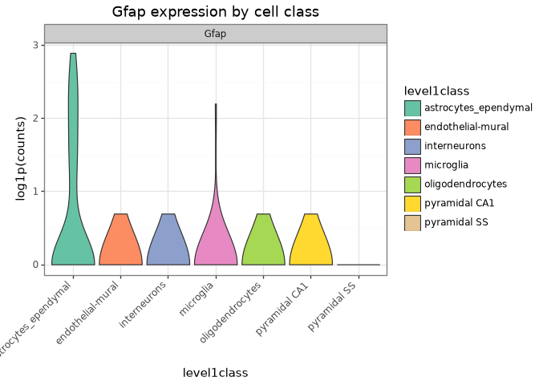

One plotting interface for DataFrame, SingleCellExperiment, and AnnData
This guide introduces the main ggnomics interface with cells from the Zeisel et al. (2015) mouse brain study. We will draw the same expression plot from a pandas.DataFrame, a BiocPy SingleCellExperiment, and an anndata.AnnData object, then customize the result with plotnine.
The introductory examples use a small stratified subset of the Zeisel dataset. load_zeisel_subset() fetches version 2023-12-14 through scrnaseq and samples up to n_per_class cells from each broad cell class.
The fixed seed makes the example reproducible. Stratifying by cell class also keeps small populations such as microglia represented in the subset.
A plain SummarizedExperiment provides similar access to assays and metadata, but it has no reduced_dimensions. The Zeisel object also arrives without a precomputed embedding. The scranpy workflow shows how to calculate PCA and UMAP and store them in the SCE.
The base plotting interface is a tidy pd.DataFrame: one row per cell or sample and one column per feature or annotation. Container adapters extract the same information automatically. Here is the corresponding table for one gene and two cell-level annotations:
After this conversion, to_anndata() puts the assay into adata.layers["counts"] and leaves adata.X as None (there was no assay explicitly marked as the SCE’s primary “X” equivalent). ggnomics’s AnnData adapter reads .X when layer=None. You can therefore pass layer="counts" explicitly or assign the counts layer to .X after conversion:
plot_expression, like the other public plot_* functions, is a functools.singledispatch generic. The base DataFrame implementation supplies the public docstring shown by ?gg.plot_expression, help(), and the API reference.
[12]:
help(gg.plot_expression)
Help on function plot_expression in module ggnomics.expression:
plot_expression(data: 'pd.DataFrame', features: 'List[str]', group_by: 'str', layer: 'Optional[str]' = None, color_by: 'Optional[str]' = None, palette: 'Optional[Dict]' = None, ncol: 'Optional[int]' = None, log1p: 'bool' = False, add_points: 'bool' = False, point_size: 'Optional[float]' = None, title: 'Optional[str]' = None) -> 'ggplot'
Violin plot of feature expression across cell/sample groups.
Each ``feature`` becomes one facet panel; the x-axis shows ``group_by``
categories and the y-axis shows expression level.
Args:
data: DataFrame whose rows are cells/samples. Requested ``features``
and ``group_by``/``color_by`` are columns.
features: Non-empty list of feature/gene column names to plot. Must
not contain duplicates or collide with ``group_by``/``color_by``.
group_by: Column whose categories define the x-axis groups.
layer: Present for cross-container signature consistency. Has no
effect for a plain DataFrame, which has no concept of layers.
color_by: Column to map to fill color. Defaults to ``group_by``.
palette: ``{category: hex}`` color mapping.
ncol: Number of columns in ``facet_wrap`` layout.
log1p: If ``True``, log1p-transform expression values before
plotting.
add_points: Overlay jittered points on violins.
point_size: Size of jittered points (``None`` → adaptive).
title: Plot title.
Returns:
A ``plotnine.ggplot`` object.
Raises:
TypeError: If no implementation is registered for ``type(data)``.
ValueError: If ``features`` is empty, contains duplicates, or
collides with ``group_by``/``color_by``.
KeyError: If a requested column is absent.
Adapters for AnnData, SingleCellExperiment, SummarizedExperiment, and MuData are registered when their corresponding packages are available:
The core installation therefore works with DataFrames alone. Installing anndata or one of the BiocPy containers makes the matching implementation available without an additional registration step.
Most plot_* functions return a plotnine.ggplot. Multi-panel and matrix functions may instead return a plotnine.composition.Compose or a small result object; these cases are listed in the plot gallery. For a ggplot, ordinary plotnine layers can be added directly:
(p+labs(title="Gfap expression by cell class",y="log1p(counts)")+theme_bw()+theme(axis_text_x=element_text(rotation=45,hjust=1)))

plot_expression facets over features. Its plotting data contain group_by, feature, and expression, so an external facet_wrap() can only use columns retained by that reshape. Pass several features to use the built-in feature facets:
Use plotnine’s ggplot.save() for a single panel. Multi-panel Compose objects can be saved with ggnomics.save_composition, as shown under Composed panels.
KeyError: "Column(s) ['not_a_real_column'] not found in the DataFrame. Available: ['tissue', 'group #', 'total mRNA mol', 'well', 'sex', 'age', 'diameter', 'level1class', 'level2class', 'rownames', 'Gfap']"
No stored embedding — plot_umap, plot_pca, and plot_reduced_dim require coordinates in the relevant reduced-dimension slot. A plain SummarizedExperiment, or an SCE before dimensionality reduction, cannot supply them:
Optional package not installed — an SCE, AnnData, or MuData implementation is only registered when its container package is importable. Without it, the generic function reports that no implementation exists for the supplied type.
Single-cell analysis with scranpy — the full Zeisel dataset through QC → normalization → HVG → PCA → clustering → UMAP pipeline, with ggnomics plots at every stage.
Bulk RNA-seq — PyDESeq2 differential expression on a rice salt-stress experiment.